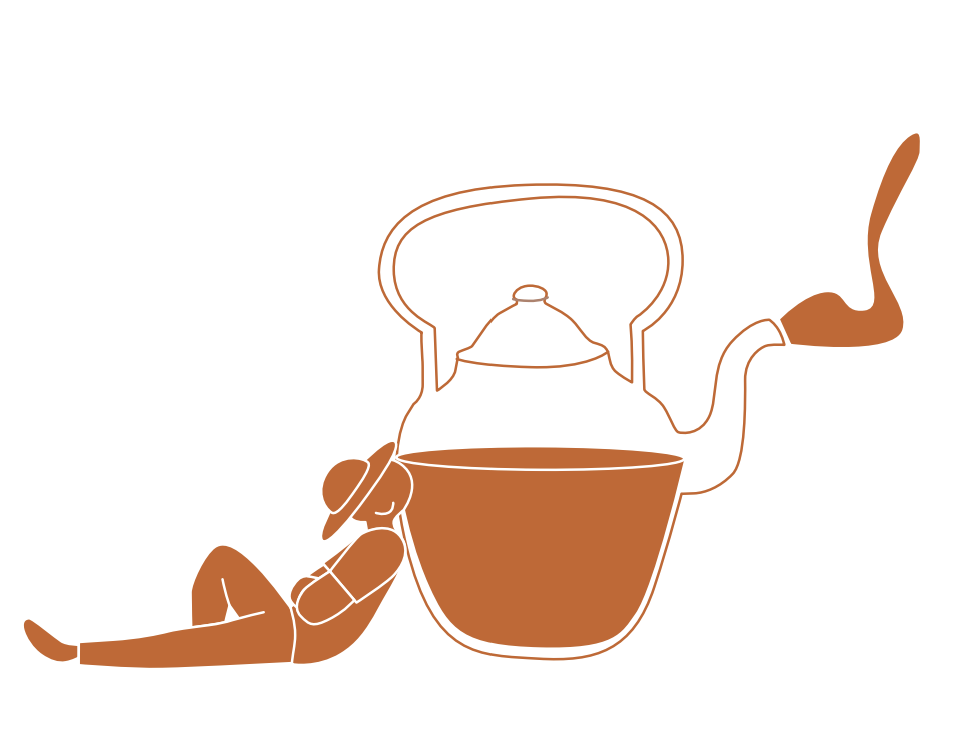

إجمالي المبيعات——

الفلاتر
صافي المبيعات——
عدد الطلبات——
متوسط قيمة الطلب——
عدد العملاء——
إجمالي الخصومات——
إجمالي المرتجعات——
عدد الإلغاءات——
نسبة النمو——
إجمالي الأرباح——
هامش الربح——
أفضل فرع——
01
المبيعات والفترات
01
ر.ساتجاه المبيعات اليومية
02
ر.ساتجاه صافي المبيعات اليومية
03
تجميع شهريالمبيعات الشهرية
04
مقارنة مماثلةمقارنة المبيعات بالفترة السابقة
05
تراكميالمبيعات التراكمية
06
نمط أسبوعيالمبيعات حسب أيام الأسبوع
02
أداء الفروع
07
من الأعلى للأدنىترتيب الفروع حسب المبيعات
08
ر.سصافي المبيعات حسب الفرع
09
طلبعدد الطلبات حسب الفرع
10
ر.س / طلبمتوسط قيمة الطلب حسب الفرع
11
مقابل الفترة السابقةنمو أو تراجع الفروع
12
نسبة مئويةحصة كل فرع من المبيعات
03
تحليل المنتجات
13
ر.سأفضل 10 منتجات حسب المبيعات
14
صافي الكميةأفضل المنتجات حسب الكمية
15
مبيعات موجبةأقل المنتجات أداءً
16
أفضل 5 + البقيةحصة أفضل المنتجات من المبيعات
17
تحليل Scatterالمبيعات مقابل الكمية
18
ر.سالأرباح حسب المنتج
04
القنوات والمدفوعات
19
صافي القيمةالمبيعات حسب التطبيق أو القناة
20
طلبعدد الطلبات حسب التطبيق
21
حسب عدد العملياتتوزيع طرق الدفع
22
ر.سقيمة المدفوعات حسب الطريقة
05
الوقت والجودة التشغيلية
23
ر.سالمبيعات حسب ساعة اليوم
24
ر.سالخصومات والمرتجعات والإلغاءات عبر الزمن
06